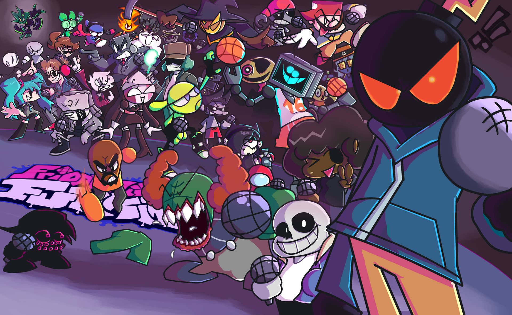
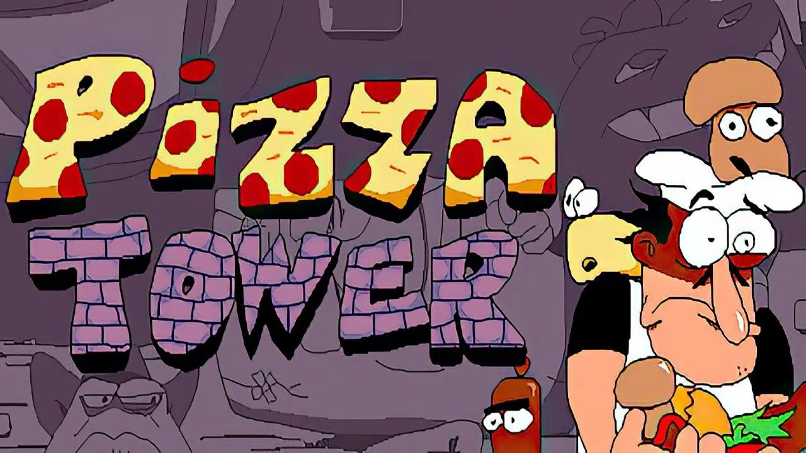
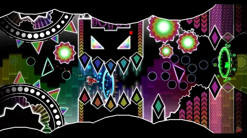
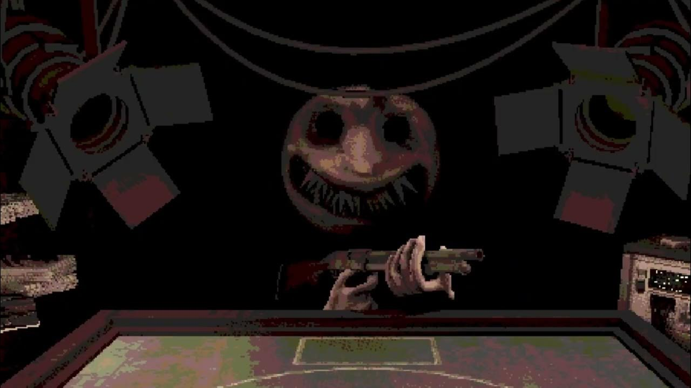

Итак сегодня я расскажу про популярные видеоигры и почему они так популярны
FNF (Friday night funking)
FNF (Friday night funking) Это простая ритм игра на реакцию, в ней 5 недель по 3 песни в каждой, популярна она стала из за модификаций которые делали фанаты, в сообществе FNF Модификации это такие же фнф игры но с другими персонажами, сюжетом, песнями и рисовкой.
Pizza tower
Pizza tower - Платформер с очень качественными анимациями и множеством уровней. В игре есть 5 этажей - "Вход в башню", "Заподный уголок", "Летний курорт", "Канализация", "Только для персонала", в каждом из них есть совершенно разные уровни. Игра стала популярной потому что, в ней, в отличии от других платформеров есть сюжет - Пиццайоло по имени Пеппино сидит в своей пиццерии на краю обрыва, вдруг у его пиццерии подлетает Pizza Face (главный злодей игры) и говорит про лазер, что находится на вершине башни который уничтожит пицерию Пеппино. В этой игре есть 5 босов - PepperMan, Vigilante, Noise, Fake Peppino, и сам Pizza Face. Так же в игре есть редактор где можно создать СВОИ уровни.
GD (Geometry dash)
GD (Geometry Dash) Ещё одна ритм игра, но в отличии от FNF имеет совершенно другой геймплей. В игре есть редактор где можно создать СВОИ уровни. Популярна она из за сложности и из за большого редактора, которого сделали ещё больше в обновлении 2.2.
Buckshot roulette
Buckshot roulette - то инди игра от разработчика Mike Klubnika. Игра корткая. Эта симулятор игры в русскую рулетку с дробовиком. Игру полюбили за то что в ней есть кучу пасхалок а так же секретная концовка, которую чтоб получить надо умереть в третьей фазе.
Cult of the lamb

Cult of the lamb - игра созданая команндой Masive Monster и это первая хорошая игра от них. У этой игры целых два жанра - рогалик и ферма. Игра обновляется и по сей день. Игру полюбили за рисовку, сюжет и геймплей.